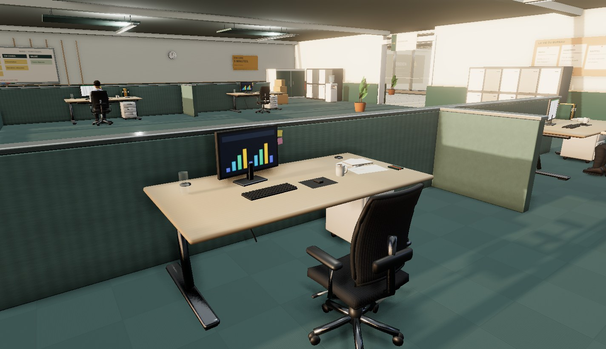
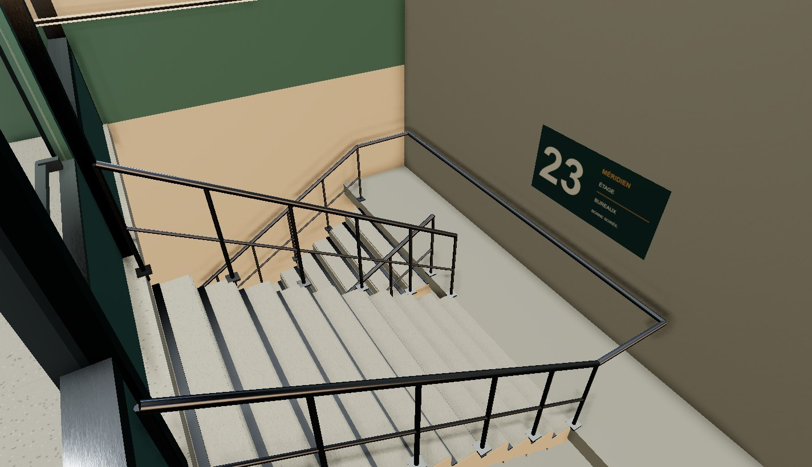
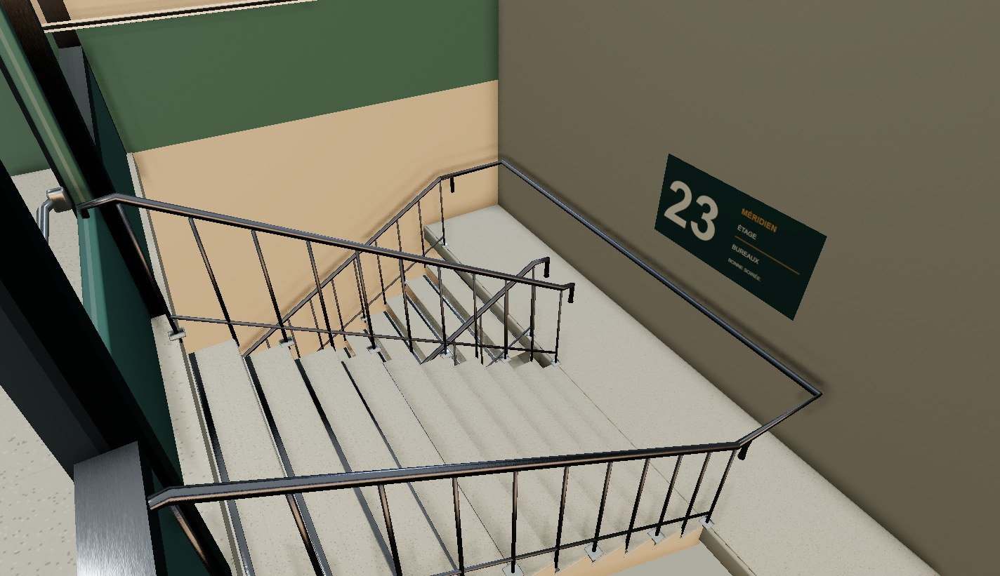
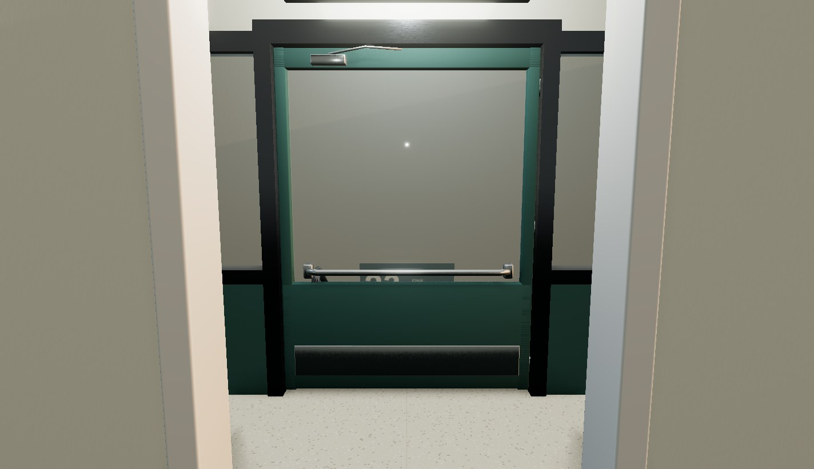

Du fichier Blender au niveau jouable.
Escape your boss 1.1.0. Captures réelles sous Windows. Les quatre exports remplacent les bureaux de travail, les fauteuils, les marches et garde-corps, ainsi que la porte de l’escalier.
Postes de travail
Avant : mobilier procédural.
Après : plateau biseauté, caisson, fauteuil ergonomique et piètement détaillé.
Cage d’escalier

Avant.
Après : volées continues, antidérapants, garde-corps et mains courantes.
Porte Blender montée sur la charnière animée du jeu.
Ouvrir les sources Blender · Voir les quatre animations d’emote